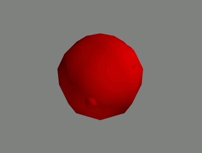
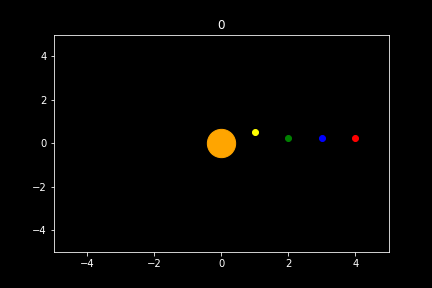

Computer scientist
Hello, my name is Mattias. I am a computer scientist. This web site contains some details about my projects, both personal, academic and employed. Then we move to my education, I am currently in my last year studying an MComp at the University of Sheffield. Then a bit more about me follows, for those who are interested. See the footer of this page for all my contact details. I hope you have an excellent day!
Download CVProjects
An immune inspired algorithm for fault tolerant multimodal machine learning
The animations above show the generation an artificial immune system for multimodal exercise logging data. The goal is for the detectors (red) to encompass space where clean data (green) may pertubate if the input device experiences noise. This increases the fault tolerance of multimodal machine learning models for automatic exercise logging (such as mmfit). This project was published at the IEEE BIBM 2021 conference workshop: Machine Learning and Artificial Intelligence in Bioinformatics and Medical Informatics (MABM 2021)
Stanford ilabs RPi project

Employed by the University of Sheffield's faculty of engineering, this project aims to provide a framework for creating digital portable lab experiments. Our methodology involves using multiple high quality cameras each controlled by a Raspberry Pi. The above image is a fun test photo. This allows a user to to log into a server which prompts for the value of each experiment variable at its current state. Each camera then takes a labeled photo and stores it on the server and updates a csv file with the variables and photo labels. Capturing expriment photos in such an organised manner enables a user to produce a detailed record of the experiment which can be shared online, aiding other researchers in reproducing experiments accurately.
Software hut
Part of completing an MComp computer science requires passing the module "software hut". As a team of 5 computer science students, a web app was developed that allows linguists to create unubiquitous questionares. The difference is that these questionares contain many sound related questionares e.g. "click when you hear Sheffield dialect". The web app is also used to to log the questionare answers and share them with sub users who can edit the questionare if given permission. The web app was made under the request of a real client unfamiliar with the software development process.
Engineering - you're hired

Another requirement of the MComp is a week-long multidisiplinery design project. This involved proposing a method for electric hybrid plane to decrease the impact of air polution from aircrafts. The solution was to use fuel for take off and use battery power elsewhere for the most common flight path (Seoul - Jeju). After presenting our research and development outline, our team received a distinction.
Education
University of Sheffield
Studying an MComp at Sheffield requires a broad span of fundamental knowledge and skills. Covering both theoretical and practical elements of computer science, the modules learned form a solid foundation for solving a wide range of problems related to computer science. Naturally, many programming languages are taught throughout the course. This forms a versatile tool kit that can be applied to tasks ranging from software engineering to artificial intelligence. At the University of Sheffield, there is a focus on team work. Many assignments were completed as a team with quality of team work playing a factor in grading a student.
Richmond School & Sixth Form College
Achieved A-levels in maths, physics and computer science (A, A, B respectively) and an AS in French (B). For GCSE, A* was achieved for maths, triple science, computer science and French. Additionaly, an A, 3 Bs and a C were met.
A bit more about me
Outside of computer science, I enjoy music. Whether it be learning, playing or simply listening, music entertains me. My favourite instruments to play are piano and guitar. I feel I am my best self when I keep up with my fitness. Some of my favourite exercises are jogging, swimming and Muay Thai. From time to time I pole dance.
I am also a fan of astronomy, here is a planet orbit simulation I wrote in a Jupyter notebook.